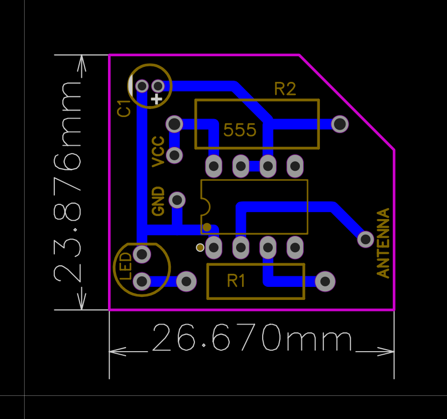

Current-Detector-Curcuit-Using 555 Timer IC
Introduction
The AC Current Detector Circuit using the 555 Timer IC is an electronic design that allows the non-invasive detection and measurement of alternating current (AC) flowing through a conductor. This circuit utilizes the 555 timer integrated circuit in a specific configuration to convert the varying AC current into a pulse-width modulated (PWM) output.
The AC Current Detector Circuit using the 555 Timer IC finds applications in electrical systems, power monitoring, energy efficiency analysis, and various industrial applications. It provides a safe and non-intrusive method for measuring AC currents without the need to interrupt or modify the circuit under test.
Circuit diagram
Here in this project, the 555 Timer is made to operate in the Monostable Mode. The 10k resistor is connected between VCC and CONTH Pins. A 4.7uF Capacitor is connected between Pin 1 and 7 while Pin 7 and 6 are shorted externally. An LED with a 220ohm resistor is connected to the Output pin 3 and GND terminals. An Antenna which will take electrical excitation from outer environment due to nearby AC current is connectec to Pin 2 of 555 Timer IC

PCB diagram
The importance of AC current detector
AC current detector devices are essential tools for:
1) Enhancing safety by identifying live AC currents without direct contact.
2) Efficiently troubleshooting electrical systems and locating faults.
3) Verifying proper electrical installations and preventing accidents.
Overall, AC current detectors ensure safety, efficiency, and reliability in electrical operations and prevent potential hazards.
Links :
GitHub repository.